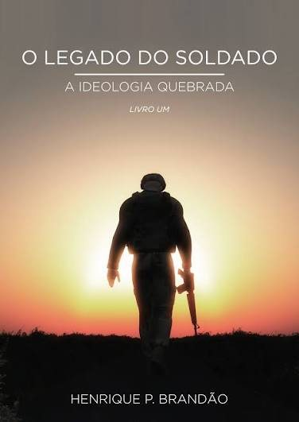
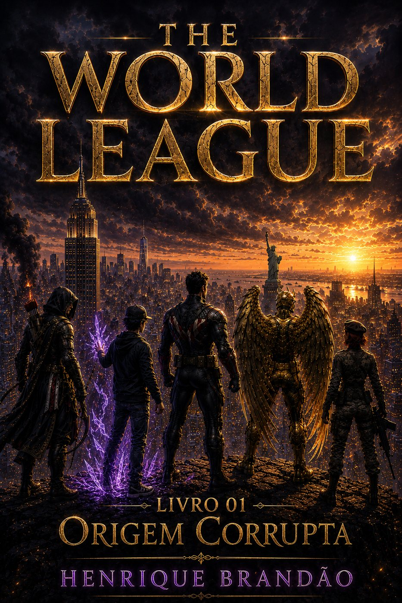
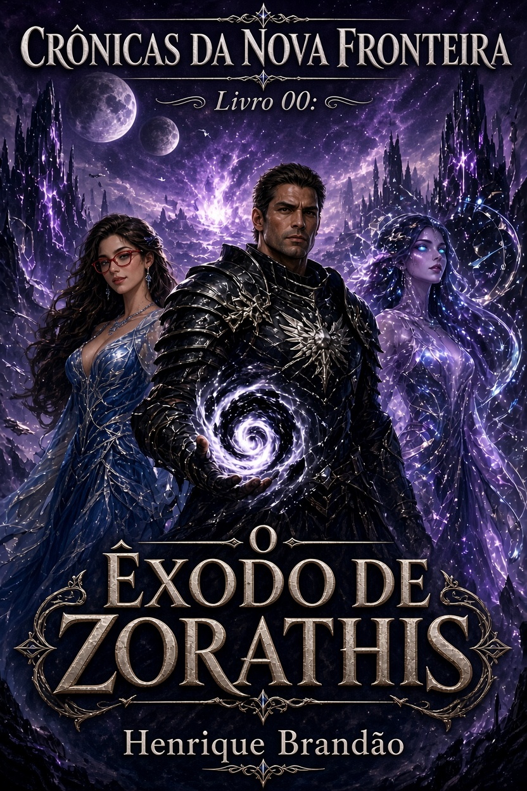

Saga literária
O Legado do Soldado
A ideologia quebrada, livro um
Um soldado caminha rumo ao nascer do sol carregando o peso do que acreditou. Uma saga sobre ideais, guerra e herança.
Em breveTrês sagas literárias e um thriller tecnológico. Cada obra terá seu endereço de compra em breve.

Saga literária
A ideologia quebrada, livro um
Um soldado caminha rumo ao nascer do sol carregando o peso do que acreditou. Uma saga sobre ideais, guerra e herança.
Em breve
Saga literária
Livro 01: Origem corrupta
Uma saga ambientada em dois universos, sobre pessoas com habilidades extraordinárias e fantasia.
Em breve
Thriller tecnológico
Quando a rede que salva vidas começa a esconder a morte. Um suspense cibernético ambientado no Rio Grande do Norte.
Em breve
Saga literária
Livro 00: O êxodo de Zorathis
A origem de tudo, bilhões de anos atrás, antes dos eventos e acontecimentos de The World League.
Em breve